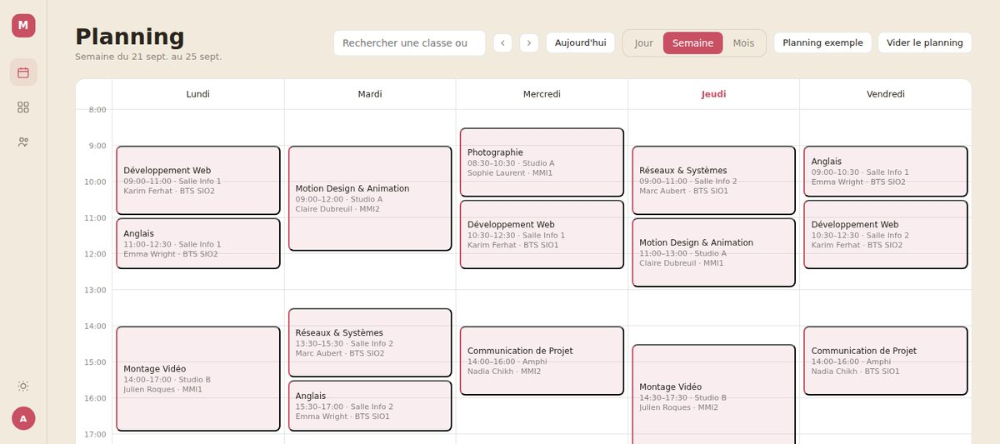

Projet de deuxième année de BTS
Pla'Net
Application web de planning des cours de MediaSchool Rouen, développée en Symfony et mise en ligne.

En bref
Pla'Net sert à construire et à consulter le planning des cours de l'école : quelle classe, avec quel intervenant, dans quelle salle et à quel moment. J'ai commencé par une maquette pour valider les écrans, puis j'ai modélisé la base de données et développé l'application en Symfony, avant de la mettre en ligne.
Le contexte et le besoin
Un planning d'école réunit beaucoup d'informations liées entre elles : des classes, des intervenants, des salles partagées, des matières, et des cours qui se répètent ou qui changent. Le besoin : un outil web qui permette aux administrateurs de saisir et de modifier ce planning, et à tout le monde de le consulter facilement.
Ce que j'ai réalisé
- Une maquette en JavaScript pour valider les écrans avant d'écrire la moindre table.
- Une base MariaDB de dix tables : campus, classes, cursus, niveaux, spécialités, matières, intervenants, salles, séances et utilisateurs.
- Plusieurs vues du planning : semaine, mois, par intervenant et par salle, avec le détail de chaque séance.
- La gestion des classes, des intervenants et des matières, avec un archivage plutôt qu'une suppression.
- La duplication d'une journée ou d'une semaine de cours vers d'autres dates, annulable.
- L'import et l'export CSV des cours, et l'export du planning sur une période.
- Les jours fériés calculés automatiquement et grisés, et des filtres par école.
Les choix techniques
- Symfony pour son organisation claire (contrôleurs, services, gabarits) et son composant de sécurité.
- Deux rôles : les administrateurs modifient, les utilisateurs consultent. Formulaire de connexion protégé par jeton CSRF et mots de passe hachés.
- La logique métier est rangée dans des services séparés : recherche des séances, duplication, import CSV, jours fériés, filtres.
- L'archivage plutôt que la suppression, pour ne jamais casser l'historique des plannings.
- Un déploiement scripté : un script PowerShell prépare et envoie l'archive, un script Bash l'installe sur le serveur.
Les difficultés et comment je les ai résolues
- Réglages ignorés en production : Symfony fige les variables d'environnement dans un fichier, et une correction restait sans effet. Le script de déploiement régénère maintenant ce fichier à chaque mise en ligne.
- Import de la base dans phpMyAdmin : l'import échouait car phpMyAdmin perd la base sélectionnée. J'ai préparé un script d'import adapté, rejouable, avec la marche à suivre.
- Jours fériés mobiles : trois d'entre eux dépendent de Pâques. Je les calcule avec un algorithme dédié, sans dépendre d'une extension PHP qui n'est pas toujours installée.
Le résultat
L'application est en ligne sur pla-net.mediaschool-rouen.fr, avec des comptes de démonstration. Elle continue d'évoluer au fil de l'année.
Ce que j'en retiens
- Maquetter et modéliser avant de coder fait gagner beaucoup de temps.
- Un code découpé en services est plus simple à faire évoluer et à tester.
- Automatiser le déploiement évite les oublis et les erreurs de manipulation.
Compétences mobilisées
- Concevoir une base de données relationnelle.
- Développer une application web avec un framework MVC.
- Gérer les droits d'accès selon le rôle de l'utilisateur.
- Mettre en ligne et maintenir une application sur un serveur Linux.
- Importer et exporter des données.
- Travailler en mode projet, de la maquette à la mise en ligne.
Une question sur ce projet ?
Je serai ravi d'en parler plus en détail lors d'un échange.